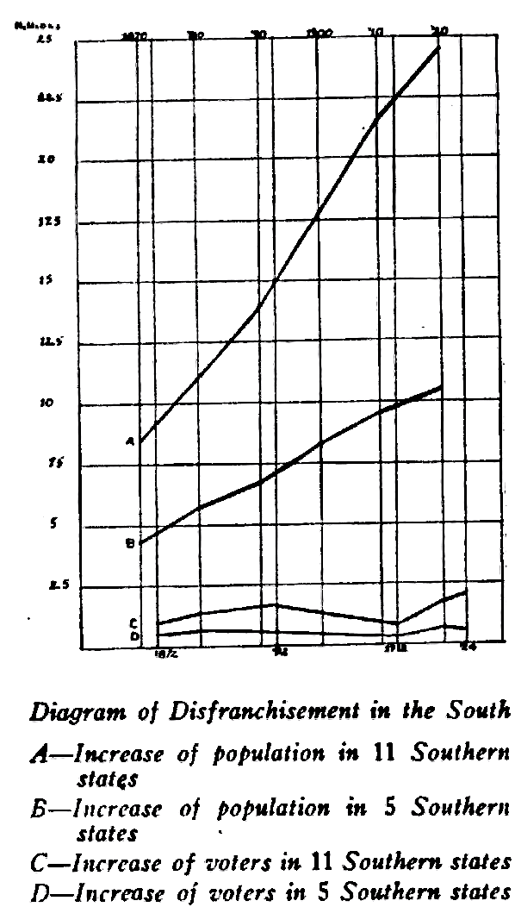

The Possibility of Democracy in America
For several years after the World War I used to talk concerning the results of the War, and to say that notwithstanding the slaughter and the upheaval that always accompany war we were going to have in the world an extension of democracy as a result of the fighting; that the democracy which formerly had ruled in restricted fields - in the election of officials, in the so-called political world - we were going to see extended into industry, so that in regard to work and wages and income, we were going to have democratic control. But I write today to apologize and change my thesis. I was wrong in what I was predicting. I see today without any doubt that instead of the great question of democracy being an extension of democratic control into further territory, the problem that faces us in America and faces the world is the question as to whether we can keep the territory which we thought democracy had already conquered; that, as a matter of fact, in every single culture country there is today a fight to retain democracy, and that reaction and oligarchy are beginning to hold up their heads in the world and to triumph. Moreover, here in the United States, here where we have essayed the greatest experiment in democracy, we have perhaps the greatest failure.
Nothing could show this more than the present presidential campaign. There are momentous questions: the plight of American agriculture, the monopoly of water power, the role of organized wealth in industry, the future of organized labor, the distribution of national income. Most of these important questions we are not facing in this campaign. Why? Because the average voter does not understand how to face them. He finds himself vainly pawing the air in the so-called elections. He finds that he cannot exercise democratic control because he is not free to vote.
In the September Crisis I showed how, where and why American Negroes were not free to vote. But how about white Americans? Are they disfranchised?
It might be assumed that the practical disfranchisement of the great majority of Negroes chiefly by race and not by condition had no effect upon the state and nation, but simply upon them: but the singular thing is, and the point which this paper is seeking to emphasize, that this disfranchisement of the Negro has had an astonishing effect on the voting of other persons in the states concerned and in the whole nation so far as the mass of voters is concerned.

First, in the Southern states it encourages oligarchy. Secondly, it enables cliques to nullify, not simply the 14th and 15th Amendments, but the 19th Amendment, giving the right vote to women, And finally, it entirely vitiates the normal distribution of voting power throughout the nation and makes a third party impossible. Let us take these points up in order.
One of the most interesting statements on clique government in the South comes from Henry W. Anderson, a rich white Virginia politician, who spoke at the Institute of Public Affairs held at the University of Virginia, August 19, 1927:
The Negroes were disfranchised. The Negro vote has since been so small that it is no longer a material factor in the political situation. But the process of disfranchisement did not stop there. The machinery of discrimination, devised primarily for this purpose, was then employed by the dominant party organization to effect a disqualification of a large proportion of the white population opposed to that organization, while unchallenged control of one political group permitted or encouraged political corruption. As a result of these measures the vote qualified or cast in the Southern States has been so reduced that it includes only a small minority of the population. So small is this vote that the State and local office-holders constitute or easily control a majority. Governors and other state officers are sometimes elected by less than 10 per cent of the population of voting age.
Let us see how far we can illustrate this state of affairs by figures: we will take eleven Southern states - Virginia, North Carolina, South Carolina, Georgia, Florida, Alabama, Mississippi, Arkansas, Louisiana, Oklahoma and Texas. We have the following facts as to the increase of population and of voting population in the presidential elections.
POPULATION
| 1870 | 8,228,826 | 1900 | 17,745,821 |
| 1880 | 11,457,878 | 1910 | 21,884,778 |
| 1890 | 14,197,747 | 1920 | 24,797,353 |
The presidential vote during this time has been as follows:
| 1872 | 1,238,141 | 1900 | 1,572,414 |
| 1876 | 1,606,230 | 1904 | 1,091,679 |
| 1880 | 1,555,534 | 1908 | 1,302,664 |
| 1884 | 1,682,314 | 1912 | 1,538,386 |
| 1889 | 1,808,964 | 1916 | 1,857,240 |
| 1892 | 1,870,948 | 1920 | 2,662,588 |
| 1896 | 1,945,463 | 1924 | 2,865,747 |
The population in these states increased over 200 per cent since 1870, but the voting population has increased only 131% over 1872, despite woman suffrage. If we compare the population 1890-1920 and the voters 1892-1920, we find the population has increased 75% and the voters 42% despite the doubling of the electorate by woman suffrage. In other words, we have in the South today not only a nullification of the 15th but also of the 19th Amendment.
Moreover, the increase of voting from 1904 to 1924 is mainly in North Carolina, Oklahoma and Texas. If we take the five states of Alabama, Georgia, Louisiana, Mississippi and South Carolina, we have this result:
POPULATION
| 1870 | 4,441,544 | 1900 | 8,318,238 |
| 1880 | 5,871,805 | 1910 | 9,716,116 |
| 1890 | 6,910,001 | 1920 | 10,517,957 |
PRESIDENTIAL VOTE
| 1872 | 661,770 | 1900 | 449,141 |
| 1876 | 844,001 | 1904 | 377,151 |
| 1880 | 701,066 | 1908 | 424,326 |
| 1884 | 619,166 | 1912 | 433,797 |
| 1888 | 629,675 | 1916 | 499,434 |
| 1892 | 693,127 | 1920 | 667,406 |
| 1896 | 598,092 | 1924 | 617,327 |
We can see here the enfranchisement of the Negro (1872-76). His disfranchisement first by intimidation (1880-84) and then by law (1892-1904); then a slow increase of the white vote, accelerated by the 19th Amendment in 1920 but checked in 1924.
The effect of the 19th Amendment is interesting: not only Negroes but white men of these states gradually stopped voting after Negro disfranchisement: the million voters of 1892 falling to less than 400,000 in 1904. A hundred thousand were added to the polls, 1904-16, although a million and a half had been added to the population. A hundred and fifty thousand women came to the polls right after the adoption of the woman’s suffrage amendment out of a possible two million and 50,000 of these disappeared four years later in spite of a million increase in population.
In other words, in these five states, out of a total of 5,145,282 persons 21 years of age and over, there were 635,512 votes cast in 1920. There were in this election, therefore, disfranchised voluntarily or involuntarily, 4,489,770 persons. Subtracting 19,000 Negroes as actually voting from the total number of Negroes 21 years of age and over, we have 2,215,991 Negroes disfranchised. But we also have 2,297,799 whites disfranchised, which is a fair indication of the cost of Negro disfranchisement in these five states.
VOTERS - SOUTH - 1920
| White | Negro | Total | Votes | Disfranchised | |
|---|---|---|---|---|---|
| South Carolina | 403,061 | 376,930 | 779,991 | 66,150 | 713,841 |
| Georgia | 846,276 | 575,330 | 1,421,606 | 148,716 | 1,272,890 |
| Alabama | 702,265 | 441,130 | 1,143,395 | 241,070 | 902,325 |
| Mississippi | 422,443 | 453,663 | 876,106 | 82,492 | 793,614 |
| Louisiana | 564,993 | 359,251 | 924,184 | 117,084 | 807,100 |
| ———– | ———– | ———– | ———— | ————— | |
| 2,919,038 | 2,206,304 | 5,145,282 | 635,512 | 4,489,770 |
| Estimated Negroes Voting | Negroes Disfranchised | Whites Disfranchised | |
|---|---|---|---|
| South Carolina | 2,000 | 374,930 | 337,721 |
| Georgia | 10,000 | 565,330 | 703,580 |
| Alabama | 5,000 | 436,130 | 464,191 |
| Mississippi | 1,000 | 451,130 | 342,484 |
| Louisiana | 1,000 | 358,251 | 449,849 |
| —————— | ———————– | ———————- | |
| 19,000 | 2,215,771 | 2,297,799 |
There is one consideration which, in the opinion of some, modifies these figures. In each one of these states there is practically but one party and a “white primary.” Ostensibly to make the exclusion of the Negro voter doubly sure a system came into vogue by which only white voters are admitted to the dominant party primary and the condition of admittance was a promise to abide by the decision of the primary.
This means that in order to vote at all the white voter must first disenfranchise himself so far as having any voice as to the major principles which form the chief matters of difference between parties. Practically his vote is confined to choosing between individuals who will carry out principles which he must accept before voting at all. If, for instance, a Southern white man wants to vote in the Democratic primary this year, he can only do so if he gives up his right to vote against Al Smith!
In four of the states mentioned, 229,619 people voted in the regular election, while 722,271 voted in the primary election. If it is assumed that participation in the primary is some index of political interest, then the vote of the five states that we are studying ought to be quoted as 1 ⅓ million rather than 600,000. But even this is not more than a third the number of voters that a normal population of 10 ½ millions should furnish under universal suffrage. It shows, not simply the disfranchisement of practically all of the Negro voters, forming 40% of the population in these states, but that even if we give some weight to the “white primary” nearly two million white voters were simultaneously disfranchised.
In other words, the effort to disfranchise a million and a half Negro voters has cost the disfranchisement of nearly two million white voters, even if one assumes that the primary election is a fair example of the exercise of political power, which, of course, it is not.